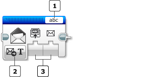
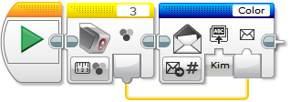
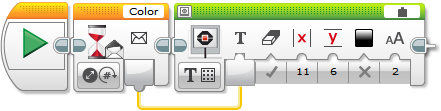
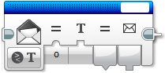

					<table cellpadding="0" cellspacing="0" border="0"><tbody><tr><td>
	
						<h1>消息传递模块<a name="top"></a></h1>
		<div id="block_555" class="block blockHeader">
				<table cellspacing="0" cellpadding="0" border="0">
			<tbody><tr>
				<td valign="top" class="image"></td>
				<td valign="top" class="description"><div class="text-wrapper">消息传递模块用于在 EV3 程序块之间发送蓝牙消息。要发送或接收消息，必须先通过程序块蓝牙菜单或通过蓝牙连接模块连接 EV3 程序块。  <br>
<br>
有关更多信息，请参见<a href="./index.html?id=Bluetooth">蓝牙连接</a>模块部分。</div></td>
			</tr>
		</tbody></table>
			</div>
	<div id="block_558" class="block blockStep">
		<div class="title"></div>
		<div class="description"><br>
<br>
	消息标题<br>
	模式选择器<br>
	输入<br>
<br>
使用模式选择器可选择所需消息传递模块工作方式。选择模式之后，可以为输入选择值。可用输入会因模式而异。下面介绍了模式和输入。</div>
			<div class="links">模式：<a href="./index.html?id=Messaging#Mode_Send">发送</a>、<a href="./index.html?id=Messaging#Mode_Receive">接收</a>、<a href="./index.html?id=Messaging#Mode_Compare">比较</a></div>
	</div>
	<div id="block_559" class="block blockStep">
		<div class="title"></div>
		<div class="description">消息以三个组件为特征<br>
1.	在其之间传递消息的程序块<br>
2.	标识消息的消息标题<br>
3.	“消息”值。这可能是文本、数字或逻辑</div>
	</div>
	<div id="block_562" class="block blockChaptor">
		<div class="title"><a name="MessagingModes" style="position:relative; top:-10px;"></a>消息传递模式</div>
		<div class="description"></div>
	</div>
	<div id="block_563" class="block blockMode">
		<div class="title"><a name="Mode_Send" style="position:relative; top:-10px;"></a>发送 <a name="Mode_SendText" style="position:relative; top:-10px;"></a>  <a name="Mode_SendNumeric" style="position:relative; top:-10px;"></a>  <a name="Mode_SendBoolean" style="position:relative; top:-10px;"></a></div>
		<div class="description"><br>
<br>
“发送”模式（文本、数字或逻辑）通过蓝牙将消息发送到连接的 EV3 程序块。可以使用<a href="./index.html?id=Messaging#ReceivingBrickName">接收程序块名称</a>输入选择要将消息发送到的 EV3 程序块。    消息标题用于唯一地标识所发送的消息。</div>
			<div class="links">使用的<a href="./index.html?id=Messaging#InputsAndOutputs">输入</a>：<a href="./index.html?id=Messaging#ReceivingBrickName">接收程序块名称</a>、<a href="./index.html?id=Messaging#SentMessage">消息</a></div>
	</div>
	<div id="block_564" class="block blockMode">
		<div class="title"><a name="Mode_Receive" style="position:relative; top:-10px;"></a>接收 <a name="Mode_ReceiveText" style="position:relative; top:-10px;"></a>  <a name="Mode_ReceiveNumeric" style="position:relative; top:-10px;"></a>  <a name="Mode_ReceiveBoolean" style="position:relative; top:-10px;"></a></div>
		<div class="description"><br>
<br>
“接收”模式（文本、数字或逻辑）通过蓝牙从连接的 EV3 程序块接收消息。<a href="./index.html?id=Messaging#ReceivedMessage">接收的消息</a>输出在接收了消息之前为“伪”。可从<a href="./index.html?id=Messaging#SentMessage">消息</a>输出获取接收的消息。  <br>
<br>
消息标题用于唯一地标识所接收的消息。</div>
			<div class="links">使用的<a href="./index.html?id=Messaging#InputsAndOutputs">输入</a>和<a href="./index.html?id=Messaging#InputsAndOutputs">输出</a>：<a href="./index.html?id=Messaging#ReceivedMessage">接收的消息</a>、<a href="./index.html?id=Messaging#SentMessage">消息</a></div>
	</div>
	<div id="block_560" class="block blockExample">
		<div class="title">示例</div>
		<div class="image"></div>
		<div class="description">EV3 程序块（名为 Leo）收集一个颜色传感器读数并将其发送到另一个 EV3 程序块（名为 Kim）。Kim 会等待，直到收到消息。此消息随后会显示在其显示屏上。<br>
<br>
Leo 的程序部分<br>
<br>
<br>
<br>
<br>
Kim 的程序部分<br>
<br>
<br>
<br>
通过消息标题可以在 EV3 程序块之间发送多个信息流。例如，一个程序块可以在相同程序中发送名为“Color”和“Rotations”的消息。</div>
	</div>
	<div id="block_565" class="block blockMode">
		<div class="title"><a name="Mode_Compare" style="position:relative; top:-10px;"></a>比较 <a name="Mode_CompareText" style="position:relative; top:-10px;"></a>  <a name="Mode_CompareNumeric" style="position:relative; top:-10px;"></a>  <a name="Mode_CompareBoolean" style="position:relative; top:-10px;"></a></div>
		<div class="description"><br>
<br>
“比较”模式（文本、数字或逻辑）将接收的消息与现有值进行比较。如果满足条件，则<a href="./index.html?id=Messaging#Result">比较结果</a>输出为“真”。如果不满足条件，则<a href="./index.html?id=Messaging#Result">比较结果</a>输出为“伪”。<br>
<br>
数字：接收的消息根据以下逻辑运算符之一与阈值进行比较。</div>
	</div>
	<div id="block_566" class="block blockTable bullets">
		<table class="blockTable">
		
<tbody><tr><td>•</td><td>等于 (0) </td></tr><tr><td>•</td><td>不等于 (1) </td></tr><tr><td>•</td><td>大于 (2) </td></tr><tr><td>•</td><td>大于或等于 (3) </td></tr><tr><td>•</td><td>小于 (4) </td></tr><tr><td>•</td><td>小于或等于 (5) </td></tr>		</tbody></table>
	</div>
	<div id="block_567" class="block blockStep">
		<div class="title"></div>
		<div class="description">文本：接收的消息根据以下逻辑运算符之一与比较文本进行比较。</div>
	</div>
	<div id="block_568" class="block blockTable bullets">
		<table class="blockTable">
		
<tbody><tr><td>•</td><td>等于 (0) </td></tr><tr><td>•</td><td>不等于 (1) </td></tr>		</tbody></table>
	</div>
	<div id="block_569" class="block blockStep">
		<div class="title"></div>
		<div class="description">逻辑：接收的消息在“比较结果”中输出</div>
	</div>
	<div id="block_570" class="block blockChaptor">
		<div class="title"><a name="InputsAndOutputs" style="position:relative; top:-10px;"></a>输入与输出 <a name="Parameters" style="position:relative; top:-10px;"></a></div>
		<div class="description">消息传递模块的输入控制消息传递工作方式的详细信息。可以将输入值直接输入到模块中。或者，可以通过<a href="./index.html?id=DataWires">数据线</a>从其他编程模块的输出提供值。可用输入及其功能取决于选择的模式。</div>
	</div>
	<div id="block_571" class="block blockTable ">
		<table class="blockTable">
		

			<tbody><tr>
<th>输入</th><th>类型</th><th>备注</th>			</tr>
<tr><td>消息标题 <a name="MessageTitle" style="position:relative; top:-10px;"></a></td><td>文本</td><td></td></tr><tr><td>接收程序块名称 <a name="ReceivingBrickName" style="position:relative; top:-10px;"></a></td><td>文本</td><td>如果此字段保留为空，则会广播消息。</td></tr><tr><td>消息 <a name="SentMessage" style="position:relative; top:-10px;"></a></td><td>文本、数字或逻辑</td><td></td></tr><tr><td>比较类型 <a name="Comparison" style="position:relative; top:-10px;"></a>  <a name="Comparison2" style="position:relative; top:-10px;"></a></td><td>数字</td><td>具有阈值或比较文本的消息比较模式比较类型。<br>
0：=（等于）<br>
1：≠（不等于）<br>
2：&gt;（大于）<br>
3：≥（大于或等于）<br>
4：&lt;（小于）<br>
5：≤（小于或等于）</td></tr><tr><td>阈值 <a name="Threshold" style="position:relative; top:-10px;"></a></td><td>数字</td><td></td></tr><tr><td>比较文本 <a name="ComparisonText" style="position:relative; top:-10px;"></a></td><td>文本</td><td></td></tr>		</tbody></table>
	</div>
	<div id="block_1346" class="block blockStep">
		<div class="title"></div>
		<div class="description">可用输出取决于所选模式。要使用某个输出，请使用<a href="./index.html?id=DataWires">数据线</a>将该输出连接到另一个编程模块。</div>
	</div>
	<div id="block_572" class="block blockTable ">
		<table class="blockTable">
		

			<tbody><tr>
<th>输出</th><th>类型</th><th>备注</th>			</tr>
<tr><td>消息 <a name="ReceivedMessage" style="position:relative; top:-10px;"></a></td><td>文本、数字或逻辑</td><td>比较类型的结果</td></tr><tr><td>比较结果 <a name="Result" style="position:relative; top:-10px;"></a></td><td>文本、数字或逻辑</td><td>比较类型的结果</td></tr>		</tbody></table>
	</div>
	
			<div id="quick">
				<div class="header"><a href="./index.html?id=Messaging#header">消息传递</a></div>
					<div class="quickText">快速链接</div>
					
					<ul>
	<li><a href="./index.html?id=Messaging#MessagingModes">消息传递模式</a></li><li><a href="./index.html?id=Messaging#InputsAndOutputs">输入与输出</a></li>					</ul>
			</div>
	
	</td></tr></tbody></table>